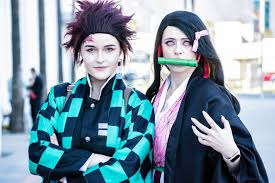
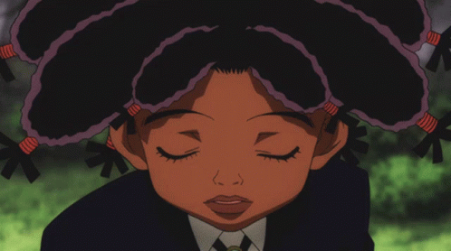
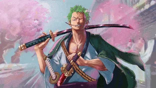
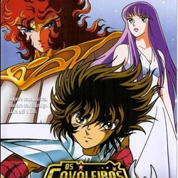

10 cosplays
incríveis da SDCC 2024
incríveis da SDCC 2024
10 personagens brasileiros
dos animes e mangás
dos animes e mangás
One Piece:
O elenco da segunda temporada
O elenco da segunda temporada
.jpg) One Piece:
One Piece: Anime vs live action
.jpg) Dia da Toalha:
Dia da Toalha: 5 nerds dos animes
 As 10 melhores
As 10 melhores bankais de Bleach
.jpg) Os live actions
Os live actions de Mackenyu Arata
Filmes e séries
dos Cavaleiros do Zodíaco
dos Cavaleiros do Zodíaco